Getting Started
This documentation describes how to create your first GKS project with a first Kubernetes cluster, how to connect to that cluster, and how to clean up all resources afterwards.
Creating Your First Project
After logging into GKS for the very first time, the following window appears. Since a project is required to create your first Kubernetes cluster, you need to click on Add Project. 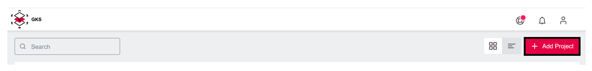
A window opens, where you can name the project. In the example, we use Team Kubernetes. To finish, click on Save Project. (../gett)
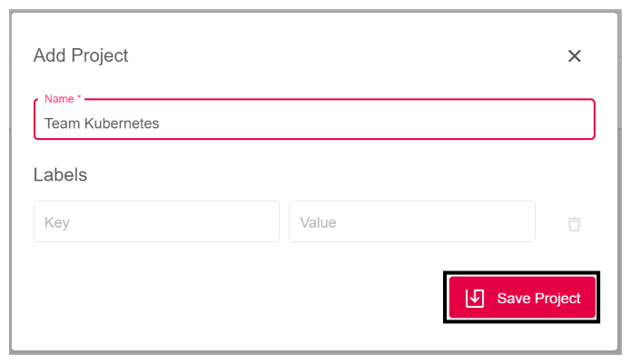
Now GKS creates your project and adds it to the overview. With a click on the entry Team Kubernetes you enter the project. 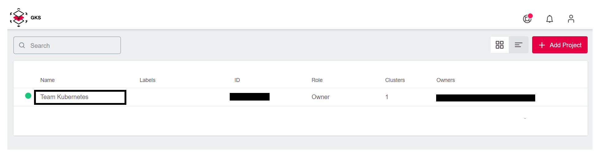
This opens a window showing the project. You see a list of all existing clusters and their users, as well as some other controls. At the moment, this list is empty until you create your first managed Kubernetes cluster. 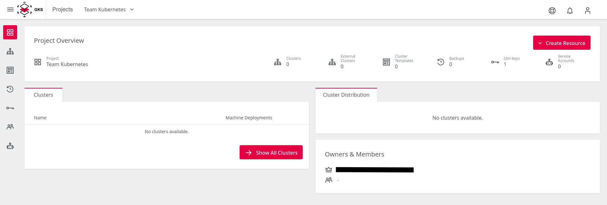
Create Your First Cluster
To create the cluster, click on Create Cluster in the upper right corner. 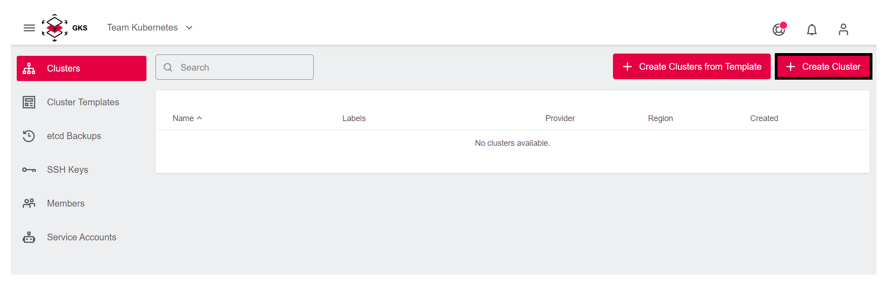
The first page of the cluster creation procedure opens. Choose the provider openstack.
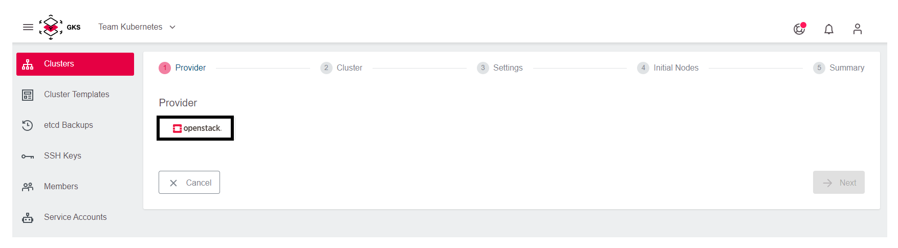
Then choose one of the three datacenters. In this example, we pick IX2.
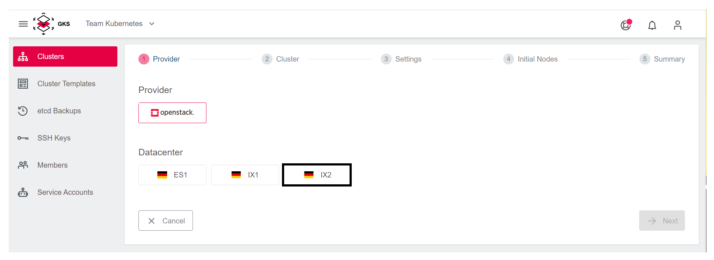
In the next step, you have to configure the cluster details. In our example, we call our cluster first-system and select the desired Kubernetes version.
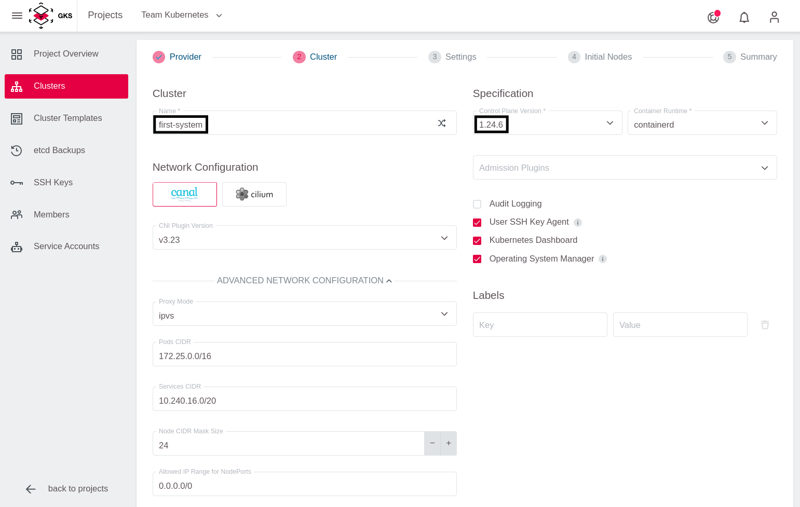
For occasional SSH access to worker nodes, you can optionally deploy an SSH Key. To add an SSH Key, click on Add SSH key.
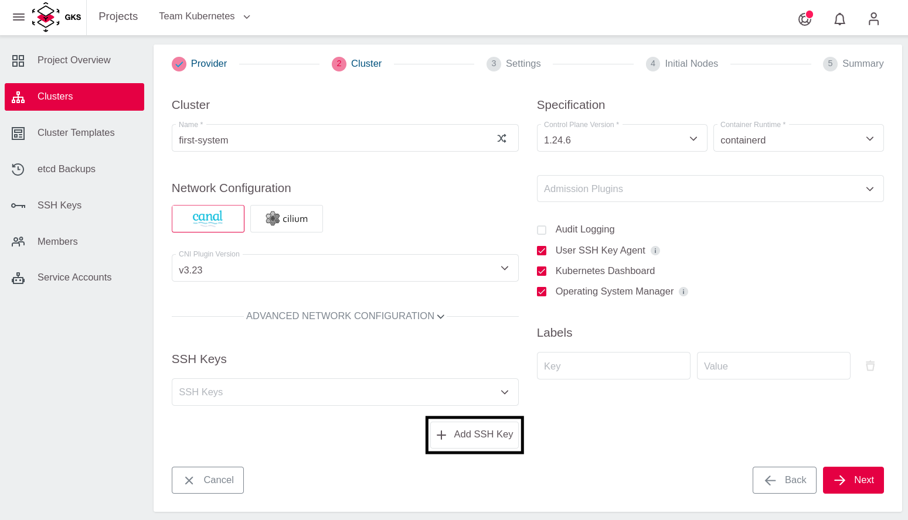
After that add the Public SSH Key and give it a memorable name.
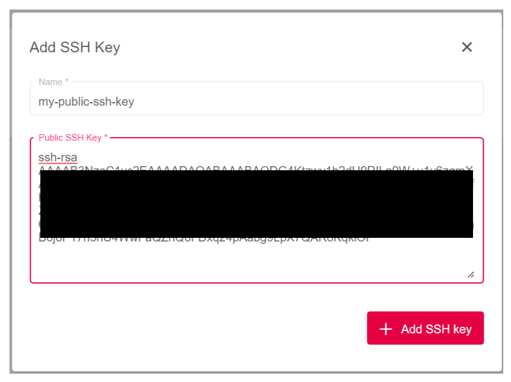
To allow GKS to request the required resources from OpenStack, add your OpenStack credentials. After that, the content of Project is refreshed automatically, and you can choose the OpenStack project where you want to run the cluster.
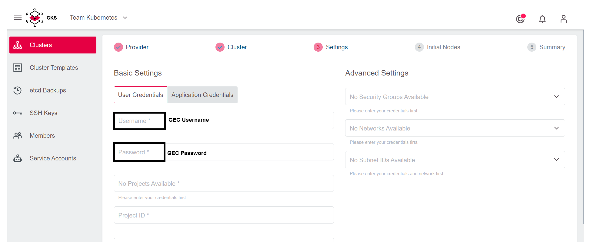 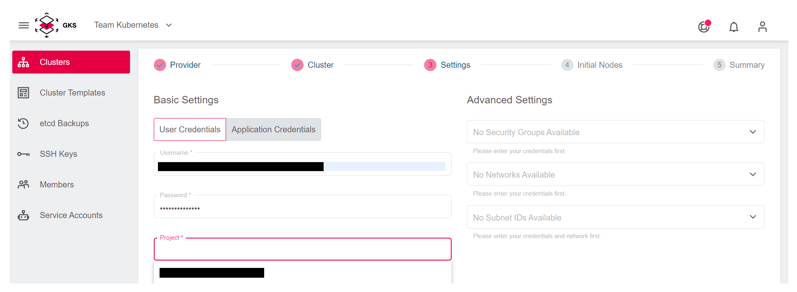
By adding the credentials and selecting the OpenStack project, you could proceed to the next step. If you do so, a new and dedicated network, subnet, and security group will be automatically created for the cluster.
It is also possible to use an existing network to create the cluster. For this, you have to select the network and the subnet from the dropdown menu, and attach them to a router. You can create a router from the Optimist dashboard or from the OpenStack command line. For details on how to create and attach the router, refer to our OpenStack documentation.
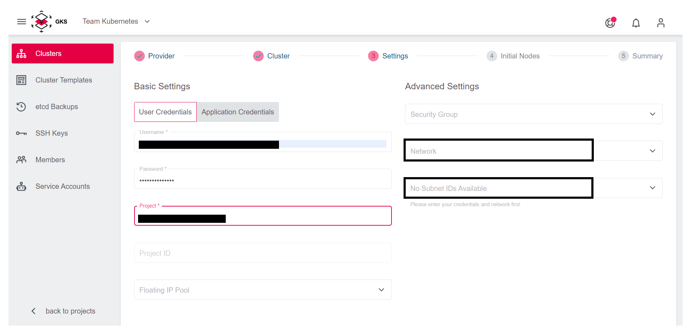
In the next step, you define the number and the kind of virtual machines that will be initially available as worker nodes in the cluster.
First, this so-called Machine Deployment needs a name. For your test cluster you use the random name generator.
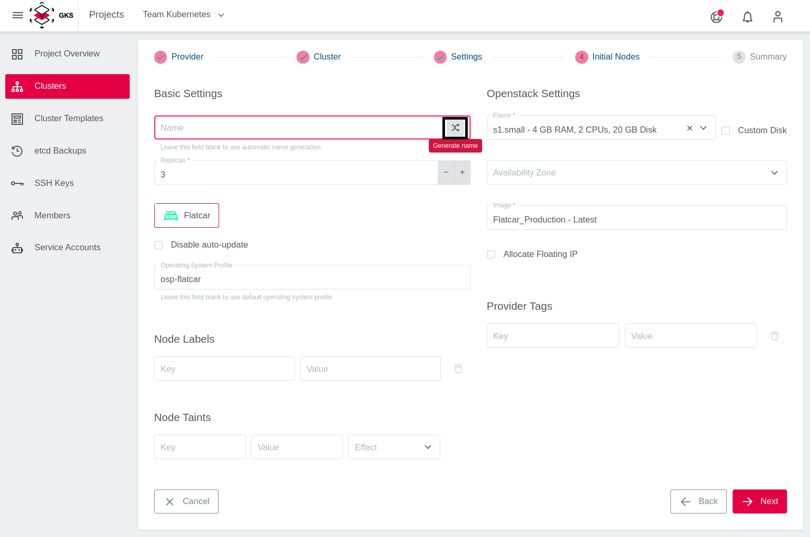
Next, specify the Replicas (number of worker nodes in your Kubernetes cluster) and the Flavor (machine type), which defines the amount of CPU and RAM for each worker node.
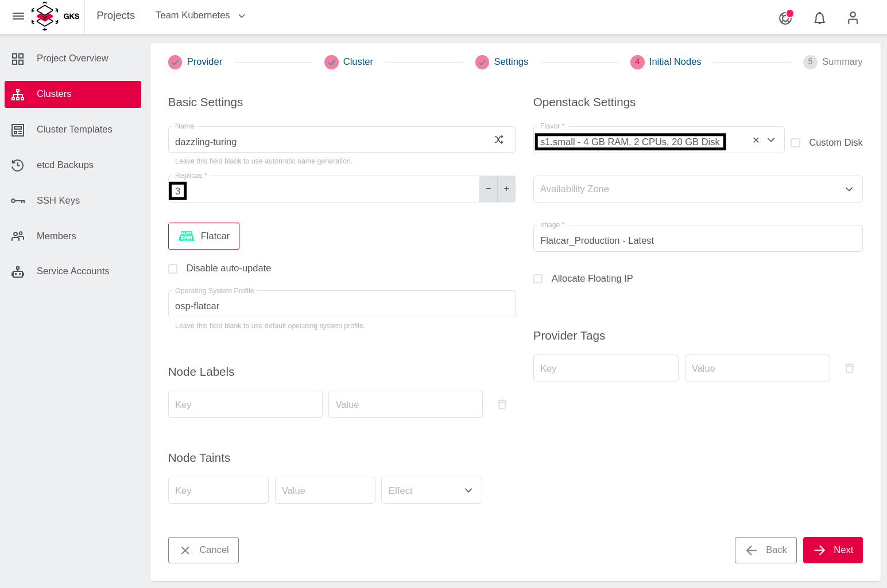
Choose Flatcar as the operating system for the worker nodes.
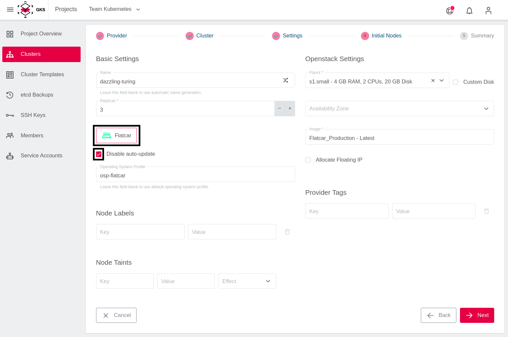
To finish, click on Next. After you verified all settings, click on Create Cluster.
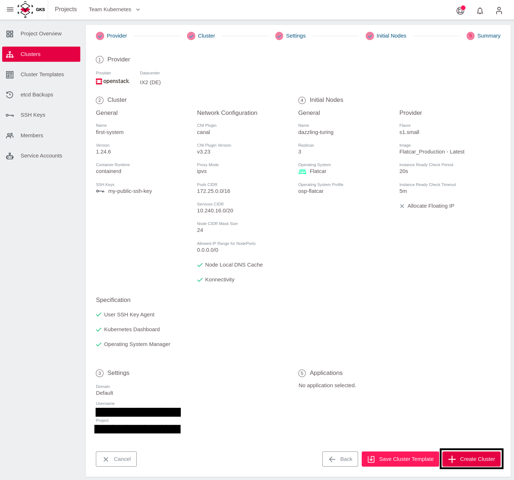
Now the cluster is being created. To access the information, return to the cluster view of the project and click your cluster’s name.
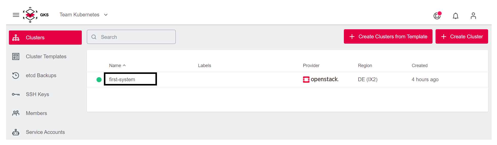
This opens a page with all cluster details: 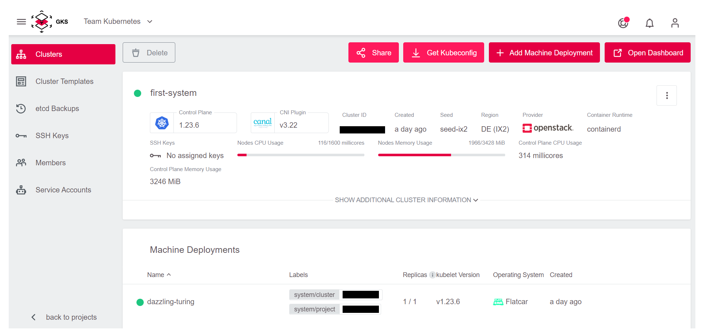
Accessing Your First cluster
To access the cluster, you need to click on the Get Kubeconfig button in the top right corner.
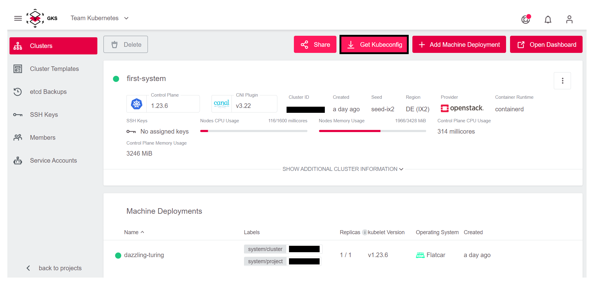
This way you download a file which is called kubeconfig in Kubernetes jargon. This file contains all end points, certificates and other information about the cluster. The kubectl command uses this file to connect to the cluster.
To use kubeconfig, you need to register it on the console. There are two ways to do this:
kubectlby default tries to use the file.kube/configin your home directory- You can temporarily use the
kubeconfigby exporting it to the environment variable KUBECONFIG
To keep things straightforward and to avoid changing standards on our system, choose the second method in the example.
For this you need to open a terminal. In the screenshots we use iTerm2 on macOS, but the examples work the same way when using bash on Linux or Windows.
First, you need to find the downloaded kubeconfig file. Browsers like Chrome or Firefox usually store it in the Downloads folder. The name is composed of two parts:
kubeconfig-admin-- The cluster id.
To register the kubeconfig, use the following command:
cd Downloads
export KUBECONFIG=$(pwd)/kubeconfig-admin-CLUSTERID
Now you can interact with the cluster. The simplest command is: “show all the nodes that comprise my cluster”:
kubectl get nodes
NAME STATUS ROLES AGE VERSION
musing-kalam-XXXXXXXXX-ks4xz Ready <none> 10m v1.21.5
musing-kalam-XXXXXXXXX-txc4w Ready <none> 10m v1.21.5
musing-kalam-XXXXXXXXX-vc4g2 Ready <none> 10m v1.21.5
Cleanup
To clean up the cluster you created, click Delete in the GKS dashboard:
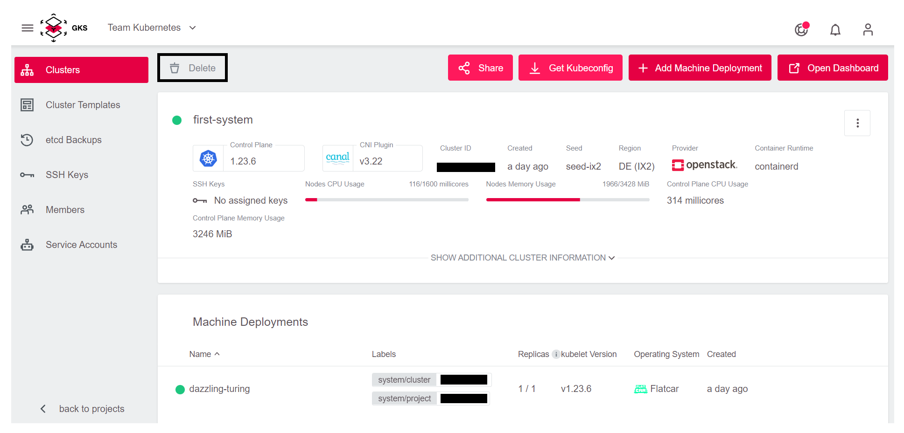
This opens a window where you need to enter the cluster name to avoid sudden and unwanted deletions:
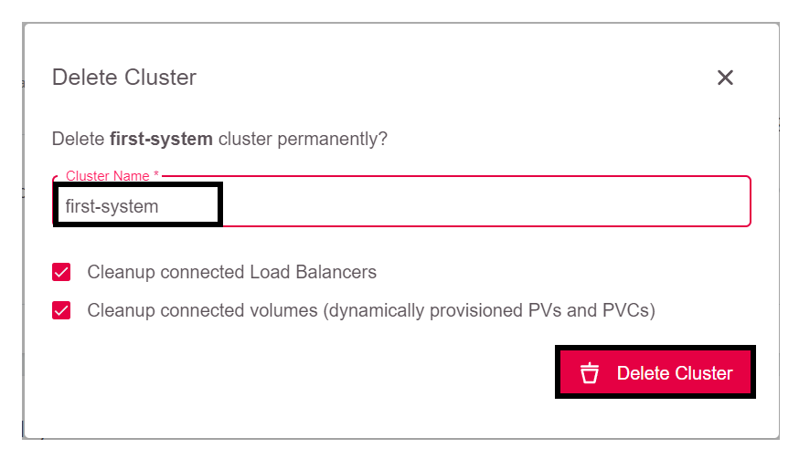
Since we also want to free up the resources, leave both check boxes marked. That way, volumes and load balancers provided by OpenStack will be removed as well.